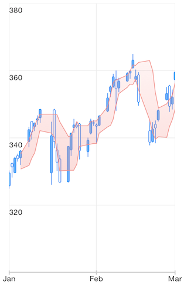
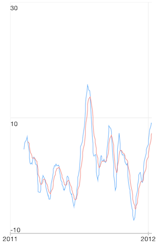

Chart Series: Financial Indicators
This article provides a brief description and a list of the impotant properties of each indicator supported by TKChart. The indicators are divided in two groups - Technical Overlays and Technical Indicators. To set up a financial indicator, you have to initialize it with TKChartCandlestickSeries or TKChartOhlcSeries containing financial data.
Technical Overlays
Here is an example how to create a Bollinger Band indicator:
Objective-C
TKChartCandlestickSeries *candlesticks = [[TKChartCandlestickSeries alloc] initWithItems:financialData];
TKChartBollingerBandIndicator *bollingerBands = [[TKChartBollingerBandIndicator alloc] initWithSeries:candlesticks];
[financialChart addSeries:candlesticks];
[financialChart addSeries:bollingerBands];
Swift
let candlesticks = TKChartCandlestickSeries(items: financialDataPoints)
let bollingerBands = TKChartBollingerBandIndicator(series: candlesticks)
financialChart.addSeries(candlesticks)
financialChart.addSeries(bollingerBands)

And here are the rest of the available Technical Overlays
- Simple Moving Average (SMA)
- Exponential Moving Average (EMA)
- Weighted Moving Average
- Triangular Moving Average
- Modified Moving Average
- TKChartAdaptiveMovingAverage
- Bollinger Bands
- Moving Average Envelopes
- Typical Price
- Weighted Close
- Median Price
Technical Indicators
Here is an example how to set up Moving Average Convergence Divergence indicator:
Objective-C
TKChartCandlestickSeries *candlesticks = [[TKChartCandlestickSeries alloc] initWithItems:_financialData];
TKChartMACDIndicator *macdIndicator = [[TKChartMACDIndicator alloc] initWithSeries:candlesticks];
macdIndicator.longPeriod = 26;
macdIndicator.shortPeriod = 12;
macdIndicator.signalPeriod = 9;
[financialChart addSeries:macdIndicator];
Swift
let candlesticks = TKChartCandlestickSeries(items: financialDataPoints)
let macdIndicator = TKChartMACDIndicator(series: candlesticks)
macdIndicator.longPeriod = 26
macdIndicator.shortPeriod = 12
macdIndicator.signalPeriod = 9
financialChart.addSeries(macdIndicator)

And here are the rest of the available Technical Indicators
- Moving Average Convergence Divergence
- Percentage Price Oscillator
- Percentage Volume Oscillator
- Absolute Volume Oscillator
- Relative Strength Index
- Relative Momentum Index
- Accumulation Distribution Line
- True Range
- Average True Range
- Commodity Channel Inde
- Fast Stochastic Indicator
- Slow Stochastic Indicator
- Full Stochastic Indicators
- Rate Of Change
- TRIX
- Williams %R Indicator
- Ease Of Movement
- Detrended Price Oscillator
- Force Index
- Rapid Adaptive Variance Indicator
- Standard Deviation
- On Balance Volume
- Price Volume Trend
- Positive Volume Index
- Negative Volume Index
- Money Flow Index
- Ultimate Oscillator
- Market Facilitation Index
- Chaikin Oscillator